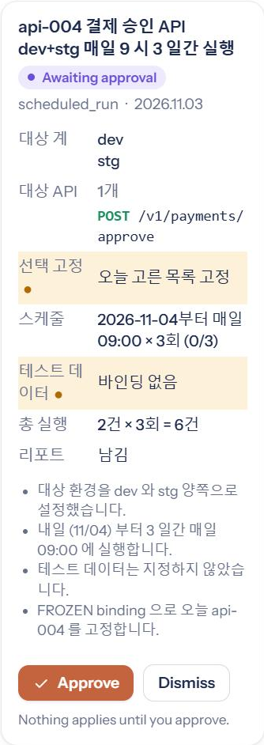
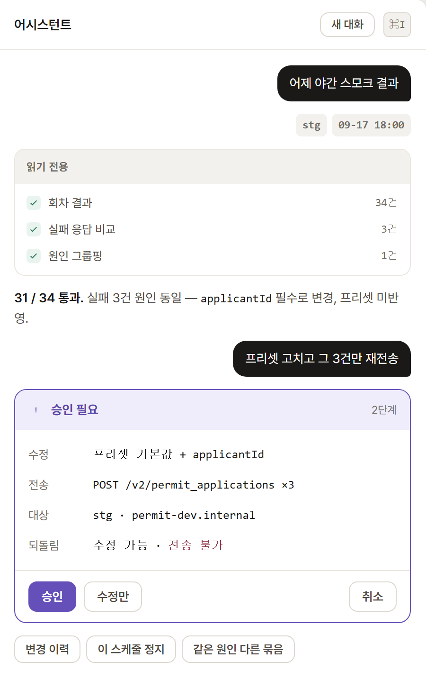

aTworks · 2026-11-03
채팅 어시스턴트 2종 비교
사내에 API 테스트용 채팅 어시스턴트가 두 개 있다. 이 저장소의 MVP 어시스턴트와, atworks_renewal_dev 백엔드에 구현된 Lithium 어시스턴트다. 차이는 기능 목록이 아니라 모델에 위임한 작업의 종류에 있다.
1. 대상
| MVP | Lithium |
|---|
| 위치 | 별도 서비스 (atworks-ai-mvp) | 백엔드 내장 (com.apitest.atworks.appagent) |
| 구현 | Python · FastAPI · SSE | Java · Spring (247 파일) |
| 도구 수 | 42 | 19 (17 + finish_turn / finish_response) |
| 모델 위임 범위 | 구조화된 계획 작성, 집계 축·측정 선택 | 화면 조작, 조회 API 선택·호출 |
| 인증 | 없음 (MVP 범위 외) | 사용자 권한 연동 |
| 저장소 | SQLite — 실행 이력·본문·롤업·감사 로그·질문 로그·어휘·대화 (19개 테이블) | DB |
| 승인 원장 | 메모리 — job·규칙·프로파일·형식 묶음 4종만 (Mock 백엔드 한정, REST 어댑터는 해당 없음) | DB |
2. 요청 처리 경로
동일 입력: api-004를 내일부터 3일간 매일 9시에 dev와 stg에서 실행
양쪽 모두 사람의 클릭이 1회 필요하다. 클릭 이후의 실행 주체가 다르다.
| MVP | Lithium |
|---|
| 모델 출력 | JobSpec (JSON) | 화면 입력값 + 클릭 |
| 저장 결과 | JobSpec 레코드 + 감사 로그 2행 | 스케줄 레코드 |
| 실행 주체 | 스케줄러 (LLM 미개입) | 브라우저 → 백엔드 |
| 상한 재검사 | 승인 시 1회, 실행 시 1회 | 등록 시 1회 |
| 추측값 표기 | confidence / assumptions 필드 | 없음 |
같은 요청을 어떻게 적어내는가
왼쪽은 틀에 값을 채워 넣는 방식, 오른쪽은 사람이 쓰는 화면을 직접 채우는 방식이다. 이 선택이 아래의 가능·불가를 거의 전부 결정한다.
MVP — 구조화된 계획(JSON)을 쓴다
모델은 화면을 만지지 않는다. 고정된 틀에 값을 채우고, 실행은 코드가 한다.
{
"kind": "scheduled_run",
"api_ids": ["api-004"],
"target_envs": ["dev", "stg"],
"schedules": [
{ "kind": "daily", "at": "09:00",
"from_date": "2026-11-04", "count": 3 }
],
"test_data": [],
"confidence": { "test_data": 0.4 },
"assumptions": ["테스트 데이터는 지정하지 않음"]
}
필드는 JSON Schema로 고정돼 있다. 모델이 추측한 값과 사람이 지정한 값이 분리 저장된다.
가능
- 여러 환경·API·데이터를 한 건으로 묶는다
예 —
target_envs: ["dev","stg"] 한 줄이 실행 6건(API 1 × 환경 2 × 3회)이 된다. 승인 클릭은 1번.
- 추측을 추측이라고 표시한다
예 —
confidence.test_data가 0.4라서 카드가 "테스트 데이터를 지정하지 않았습니다"라고 되묻는다. 모델이 임의로 채운 값이 확정값에 섞이지 않는다.
- 승인한 뒤에도 다시 센다
예 — 승인 후 대상 API가 120개로 늘면 상한 100을 넘으므로, 실행은 0건으로 멈추고 가드레일 메모가 남는다.
- 왜 그렇게 실행됐는지가 레코드로 남는다
예 — 3주 뒤 "누가 stg를 켰나"는 JobSpec 1건과 감사 로그 2행으로 답한다.
불가
- 틀에 없는 요청
예 — "실패하면 슬랙으로 알려줘"는
JobSpec에 알림 필드가 없어 계획으로 만들 수 없다. 거절하되 미충족 질문으로 기록한다(§6).
- 화면에 있는 다른 일
예 — "api-004 스펙의 timeout을 5초로 바꿔줘"는 스펙을 고치는 도구가 아예 없어 불가.
- 새 작업 종류를 그 자리에서 늘리기
예 — 서버 비교(parity)를 넣을 때 스키마 필드·도구·리포트 블록을 코드로 각각 추가했다. 화면에 칸이 하나 생기는 것만으로는 늘지 않는다.
Lithium — 사람이 쓰는 화면을 직접 채운다
모델은 등록 화면을 열고 칸마다 값을 넣는다. 고정된 틀이 없고, 화면이 곧 작업 범위다.
쓰기만 화면으로 한다 — 읽기는 앱의 조회 API를 직접 호출한다(find_operation·read_app).
도구 4개(ui_open·ui_look·ui_fill·ui_click)가 화면 쪽, 2개가 조회 쪽이다.
ui_open { route: "스케줄 등록" }
→ snapshotId "s-41"
→ 입력 칸마다 ref 번호 부여
ui_fill { snapshotId: "s-41",
ref: 7, value: "api-004" }
ui_fill { snapshotId: "s-41",
ref: 12, value: "09:00" }
ui_fill { snapshotId: "s-41",
ref: 15, value: "dev" }
ui_click { snapshotId: "s-41", ref: 20 }
← 저장 효과 → 확인 카드 → 승인 후 실행
칸 하나에 호출 하나다. 남는 것은 등록된 스케줄 레코드이고, 입력 과정 자체는 레코드로 남지 않는다.
가능
- 화면에 있는 기능이면 코드 추가 없이 쓴다
예 — 등록 화면에 '재시도 간격' 칸이 새로 생기면, 모델은 스냅샷에서 그 칸의
ref를 받아 바로 채운다. MVP는 같은 일을 하려면 스키마에 필드를 넣어야 한다.
- 조회든 등록이든 수정이든 같은 방식으로 한다
예 — "api-004의 timeout 5초로"도 스펙 편집 화면을 열어 칸을 채우면 된다. MVP에는 그 도구가 없다.
- 번호를 지어낼 수 없다
예 — 모델이
ref: 99를 넣으면 REF_NOT_FOUND, 화면이 바뀐 뒤 낡은 번호를 쓰면 STALE_SNAPSHOT으로 거절된다.
- 저장 직전에 사람 확인을 받는다
예 — 저장 버튼은 효과가 '저장'으로 선언돼 있어
ui_click 앞에 확인 카드가 뜬다.
불가
- 환경 두 개를 한 번에
예 — 한 스케줄이 서버 하나이므로 dev와 stg는 위 호출 열을 두 번 반복해 스케줄 2건이 된다. 확인도 2번이다.
- 추측과 확정을 구분
예 — 모델이 테스트 데이터를 임의로 넣어도, 칸에 값이 들어간 모습은 사람이 지정한 것과 똑같다.
- 입력 과정을 되짚기
예 — "왜 09:00이 됐나"의 근거가 레코드에 없다. 남는 것은 결과 스케줄뿐이다.
- 등록 이후 재검사
예 — 상한은 등록 시 1회만 센다. 실행 직전에 다시 세는 단계가 없다.
- 조회 API에 없는 집계축
예 — "엔드포인트 구간별 실패율"은 그런 조회 API가 있어야 답한다. 모델은 이미 있는 API를 BM25로 찾아 호출할 뿐, 축을 새로 만들지 못한다.
경로명과 ref 번호는 형태를 보이기 위한 값이다. 필드 이름(snapshotId·ref·값), 번호 부여 방식, 낡은 스냅샷 거절, 저장 효과 선언 앞의 확인 카드는 문서에 정의된 그대로다.
3. 승인 절차
MVP · 실행 계획 카드

실행 화면 캡처. 대상·스케줄·총 실행 건수는 JobSpec에서 서버가 계산한다. 하단 4줄은 모델이 채운 값의 근거다.
Lithium · 확인 카드

UI 리뉴얼 목업(ui_renewal/dist/shots). 카드 문구는 코드가 생성하고, 전송 대상과 되돌림 가능 여부를 항목으로 표시한다.
| MVP | Lithium |
|---|
| 승인 단위 | 매트릭스 전체 (부분 승인 없음) | 조작 1건 |
| 승인 경로 | HTTP 라우트 POST /changes/{id}/apply | 카드 클릭 |
| 만료 | 없음 (대기 큐 유지) | 10분, 요청 변경 시 무효 |
| 채팅 내 승인 | 불가 — 채팅 텍스트는 승인 표식을 세울 수 없음 | 불가 — 카드 클릭만 유효 |
| 기록 | 감사 로그 2행 (시도 / 결과) | 탭 메모리 |
4. 화면 조작 범위
| 동작 | 예시 | MVP | Lithium |
|---|
| 뷰 이동 |
"실패한 실행 보여줘" → 화면이 Runs로 전환 |
있음 navigate_screen | 있음 ui_open |
| 항목 스크롤 |
"api-004 상태는?" → 300행 목록에서 해당 행까지 스크롤 |
있음 | 있음 |
| 필터 설정 |
"실패만" → Runs의 상태 필터가 '실패'로 전환 |
있음 상태·검색어 | 있음 |
| 항목 번호 강조 |
답변의 ①②③과 화면 행의 번호가 일치 (아래 캡처) |
있음 최대 8개 | 없음 |
| 화면 상태 조회 |
"이거 왜 실패했어?"의 '이거'가 해석되는 근거 |
자동 전달 매 요청 | 모델 호출 ui_look |
| 입력 필드 설정 |
스케줄 폼의 시작 시각 필드에 09:00 입력 |
도구 없음 | 있음 ui_fill |
| 버튼 클릭 |
저장 버튼 클릭 — 이 지점부터 데이터가 변경된다 |
도구 없음 | 있음 ui_click |
| 단건 API 호출 |
"현재 재고?" → 조회 API를 호출해 응답을 답변에 사용 |
없음 | GET 무확인 그 외 카드 |
대응 범위
답변의 "①이 가장 위험하고, ②는…"과 화면 행의 번호가 대응한다. 대상은 항목(API·실행·job·규칙)에 한정된다. 버튼·탭·요약 타일은 대상이 아니다.
강조 대상은 세션에서 조회한 적이 있거나 현재 화면에 표시된 항목이어야 한다. 그 외는 제외되고, 전부 제외되면 호출 자체가 거부된다.
MVP의 도구 목록에 ui_fill·ui_click에 해당하는 도구가 없다. 차단이 아니라 미구현이다. 모델 오작동의 최대 영향은 잘못된 화면 표시이고, 데이터 변경은 경로 자체가 없다. Lithium은 데이터 변경이 가능하므로 확인 카드·버튼 효과 선언·스냅샷 재검증·10분 만료가 필요하다.
5. 동일 기능의 구현 차이
예약 실행 — 한 번의 승인이 덮는 범위
MVP의 상한은 매트릭스 전체 400칸이고, 그 전부가 승인 한 번에 들어간다. Lithium은 스케줄 자체의 기능(프리셋·시나리오·버전 고정)이 더 많지만, 한 건이 서버 하나를 겨냥한다.
서버 응답 비교 — 노이즈를 걷어내는 경로
같은 기능이고 경로도 거의 같다. 다른 칸은 양 끝이다 — Lithium은 실행 전에 호출 수를 보여주고, MVP는 승인 후 재실행 없이 저장된 본문으로 다시 계산한다.
집계 — 숫자를 얻는 방법
MVP는 표현할 수 있는 질문이 카탈로그로 한정되는 대신 수치가 결정론이다. Lithium은 앱이 이미 가진 조회 기능만큼 답할 수 있고, 도구를 늘리지 않고도 범위가 넓어진다.
| 기능 | MVP | Lithium |
|---|
| 예약 실행 |
1 JobSpec = API × 환경 × 데이터 매트릭스. 상한 400. 환경 2개 동시 지정. |
프리셋·컬렉션·시나리오·명세 버전 고정·실패 API 재실행. 1 스케줄 = 서버 1개 (serverId 단일 필드). |
| 서버 응답 비교 |
필드 단위 비교 → 노이즈 클러스터 → 무시 규칙 승인 → 저장된 본문으로 재계산(재실행 없음). |
ServerCompareIgnoreRule, shapeSignature(동형 일괄 판정), REAL/DATA_DIFF/IGNORED. 호출 수 미리보기, PROD는 GET 강제. |
| 집계 |
차원 14 × 측정 9 카탈로그에서 모델이 축만 선택. 수치는 SQL이 계산. |
어시스턴트 도구 없음. 백엔드에는 집계 API 존재(ControllerAggregate) — 어시스턴트가 BM25 검색으로 찾아 GET 호출. |
6. 처리할 수 없는 요청
두 시스템이 가장 많이 갈리는 지점이다. MVP는 고정된 틀에 맞지 않으면 막고, Lithium은 화면·기능에 닿지 못하면 막는다. 막는 대상이 다르므로 아래 두 표는 나란한 비교가 아니라 각자의 경로다.
MVP — 틀을 벗어난 입력
세 관문을 차례로 지난다. 앞의 둘은 거절 사유가 모델로 돌아가 스스로 고치고, 마지막 하나는 사람에게 남길 기록을 먼저 만든다.
| 입력 | 차단 지점 | 결과 |
|---|
미정의 필드
"priority": "high" | 스키마 | 도구 호출 거부, 사유를 모델에 반환. 모델이 수정 후 재시도. |
열거값 외
"kind": "weekly" | 스키마 | 동일. once / daily 2개만 허용. |
허용 외 환경
"target_envs": ["prod"] | 가드레일 | 스키마는 통과, 코드가 차단. 위반 환경명을 전부 열거해 거부. |
상한 초과
매트릭스 400 초과 | 가드레일 | 계산값을 포함해 거부. 승인 시점과 실행 시점에 각각 검사. |
| 축 3개 집계 | 카탈로그 | 축 최대 2개. 거부 후 미충족 질문으로 기록. |
카탈로그로 표현 불가
"다음 주 실패 예측" | 프롬프트 규칙 | note_unmet_ask 호출이 선행돼야 한다. 기록 없는 거부는 규칙 위반. |
Lithium — 닿지 못한 대상
Lithium에는 고정된 계획 스키마가 없다. 대신 도구마다 결과 코드가 있고, 모델은 그 코드를 받아 다음 수를 고른다.
| 상황 | 결과 코드 | 의미 |
|---|
| 없는 화면·항목 | UNKNOWN_ROUTE UNKNOWN_ID INVALID_PARAMS | 모델이 경로나 id를 지어내면 열리지 않는다. |
| 낡은 화면 기준 | STALE_SNAPSHOT REF_NOT_FOUND | 화면이 바뀐 뒤의 입력·클릭은 거절된다. 모델은 화면을 다시 읽어야 한다. |
| 사람만 할 수 있는 조작 | HUMAN_ONLY GUARD_BLOCKED NEEDS_CONFIRM | 버튼의 효과 선언에 따라 확인 카드로 넘기거나 아예 막는다. |
| 조회 기능이 없음 | 빈 목록 | find_operation이 못 찾으면 빈 결과. 카탈로그 밖 키, GET 외 메서드는 read_app이 거절한다. |
| 도구가 꺼져 있음 | SCREEN_TOOL_DISABLED | 관리자가 끈 도구는 애초에 제공되지 않는다. |
차이는 거절 이후에 있다. MVP는 답하지 못한 질문을 기록해 다음 기능의 근거로 쓰고, Lithium은 그 턴에서 끝낸다.
MVP — 미충족 질문의 처리 경로
아무도 코드를 고치지 않아도 자주 묻는 질문이 메뉴가 된다. 승격 기준은 설정 필드 세 개(promote_window_days·promote_min_users·promote_min_asks)다.
| 단계 | 조건 |
|---|
| 기록 | 턴마다 1행. 의도와 클러스터 키는 호출된 도구와 생성된 카드에서 코드가 산출한다. |
| 승격 | 동일 클러스터가 7일 내 · 서로 다른 3명 이상 · 5회 이상, 부정 평가 과반이 아닐 것. |
| 결과 | 저장 질문으로 등록. 제목은 카탈로그가 생성. 실행 시 그 시점 데이터로 재계산한다. |
Lithium에는 이 경로가 없다. 대신 앱의 조회 API를 BM25로 탐색해 호출하는 방식으로 응답 범위를 넓힌다.
7. 한쪽에만 있는 기능
가운데가 중복 구현의 위험 구간이다 — 통합할 때 다시 만들지 말아야 할 것들이다.
| MVP에만 있음 | Lithium에만 있음 |
|---|
| 다환경 매트릭스 — 승인 1회로 API × 환경 × 데이터 전체 | 인증·권한 — 사용자 권한으로 조회, 프로젝트 역할 |
| 축 선택 집계 — 엔드포인트 구간, 주/일, 담당자, 2축 동시 | 화면 입력·클릭 — ui_fill, ui_click, 스냅샷 재검증 |
| 결정론 판정 — 위험도 순위, 불안정 판정, 상태 전이 수 | 버튼 효과 선언 — 버튼명이 아닌 선언값으로 위험도 판정 |
| 인제스트 시점 롤업 — 200만 건 기준 SLO 검증 | 승인 원장 영속 — MVP는 Mock 백엔드에서 메모리 보관 |
| 자연어 → 검증 규칙 초안, 영향 시뮬레이션 후 승인 | 도구 on/off 관리 화면 — 17개 개별 토글, 전체 중지 |
| 팀 어휘 — 용어 해석을 1회 확인받아 전체 공유 | 첨부 파일 — 문서·로그·이미지 |
| 미충족 질문 → 저장 질문 승격 | 모델 이중화, 사용자당 동시 턴 3개, 토큰 예산 상한 |
8. 채팅 부가 기능
무엇을 보장하는가
완료 표시는 그 단계가 부른 도구의 결과가 실제로 돌아왔을 때만 붙는다. 모델이 끝났다고 말해서 체크되는 일은 없다.
모델이 총 단계를 미리 알리지 않은 경우에는 분모를 만들지 않고 “N단계 진행 중”으로 두고 목록만 늘린다. 없는 숫자를 지어내지 않는다.
도구가 실패하면 그 줄은 ✕로 멈춘다. 돌지 않는 것을 도는 것처럼 보이게 두지 않는다.
| 항목 | MVP | Lithium |
|---|
| 대기열 | 답변 중 입력한 메시지를 큐에 적재 후 순차 전송. 순서 변경·편집·삭제, 새로고침 후 유지. | 없음. 사용자당 동시 턴 3개로 처리. |
| 다중 대화 | 대화 생성·검색·이름 변경·삭제. 재진입 시 화면 기록과 모델 맥락 복원. 백그라운드 처리. | 대화 단위 유지. 프로젝트 외 개인 대화 지원. |
| 연결 끊김 | 턴이 연결과 분리. 재접속 시 진행 중 답변을 처음부터 재생. | 미확인 |
| 진행 표시 | 단계 목록 고정 표시. 완료 단계는 취소선. 도구 결과 수신 시에만 완료 처리. | 미확인 |
| 맥락 유지 | 확정된 팀 어휘만 세션 간 전달. 자유 발화는 저장하지 않음. | 목표·제약·결정을 기록해 다음 턴에 참조. 이전 대화 검색·열람. |
| 첨부 | 화면 항목 첨부(API·실행·job). 첨부 항목이 해당 턴의 범위가 된다. | 문서·로그·이미지 파일. 이미지 인식 모델이면 캡처 해석. |
| 출처 표기 | 카드마다 집계 조건·조회 창·사용한 소스를 JSON으로 표기. | 조회 결과에 해당 자료의 주소를 부착. 주소를 생성하지 않음. |
| 오류 처리 | 재시도·진단 복사·로그 내보내기. | 자료 없음 / 검색어 불일치 / 권한을 구분해 응답. |
| 평가 | 👍/👎. 👎는 사용된 어휘에 반대표, 👍는 회귀 테스트 케이스 생성. | 없음 |
9. 통합 방안
채팅 표면은 하나만 유지할 수 있다.
세 안의 차이는 "무엇을 버리는가"다. A안만 버리는 것이 없다.
| 방안 | 내용 |
|---|
| 권장 | A. 분석 엔진으로 흡수 | 채팅 표면은 Lithium 유지. MVP의 매트릭스 예약·축 집계·결정론 판정·규칙 저작·미충족 질문 승격을 Lithium 도구로 추가. 서버 비교와 스케줄은 중복이므로 재구현하지 않는다. |
| B. 별도 서비스 병행 | 분석·예약 패널을 분리 운영. 역할은 나뉘나 사용자가 채팅 창 2개를 구분해야 한다. |
| 비권장 | C. Lithium 교체 | 구현 완료된 권한·화면 조작·확인 카드를 폐기해야 한다. |
선행 조건. MVP의 실행 이력·감사 로그·어휘는 SQLite에 있으나, 승인 원장 4종(job·규칙·프로파일·형식 묶음)만 메모리에 있다. 재시작하면 감사 로그에는 "job-0007을 승인했다"가 남고 job-0007은 사라진다. Mock 백엔드 한정 문제이므로 REST 어댑터로 대체하면 해소되지만, 그 전까지 데모·검증 환경에서는 재시작이 승인 상태를 지운다.
부록 A. 확인 근거
| 항목 | 근거 |
|---|
| Lithium 어시스턴트 구현 규모 | appagent/ Java 247 파일. 문서상 도구 19개가 소스에 모두 존재 |
| MVP 도구 42개, 입력·클릭 도구 부재 | 도구 목록 생성 후 전수 대조. 입력·클릭 계열 일치 0건 |
| 집계 카탈로그 14 × 9, 축 최대 2 | QuerySpec 정의. 3축 입력 시 검증 단계에서 거부 |
| 강조 상한 8 | max_highlight_targets = 8 |
| 가드레일 2중 검사 | 스테이징·실행 시점에 각각 check_job_guardrails |
| 승격 조건 7일 · 3명 · 5회 | promote_window_days 7, promote_min_users 3, promote_min_asks 5 |
| Lithium 비교 무시 규칙 | tb_server_compare_ignore_rules, shapeSignature, resolution |
| Lithium 스케줄의 서버 단일성 | TestExecutionSchedule의 serverId 단일 필드 |
| Lithium 어시스턴트의 집계·강조 도구 부재 | appagent/ 내 일치 0건. 백엔드에는 ControllerAggregate 존재 |
MVP api_ids 상한 불일치 | 스키마 maxItems: 500, 설정 max_apis_per_job: 100. 차단은 가드레일이 수행하나 선언된 불변식과 불일치 |
MVP: docs/chat-features.md, atworks-agent/core/atworks_agent/, host/atworks_host/ (feature/self-growth, 6a619bb).
Lithium: atworks_renewal_dev/backend/docs/ai-agents/assistant/, src/main/java/com/apitest/atworks/, ui_renewal/ — 읽기 전용 참조.
기준일 2026-11-03. 코드가 우선한다.